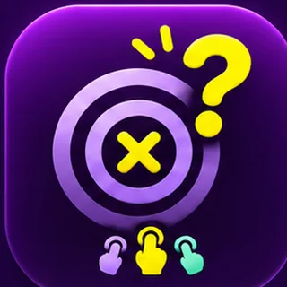

Browser-Test · Prototyp
Völlig daneben!
Wer schätzt am besten? Spiele mit 2 bis 4 Personen an einem Handy.
SCHÄTZEN · WEITERGEBEN · AUFLÖSEN
Die Fragen sind ein erster lokaler Testsatz. Alle Tipps werden erst angezeigt, wenn alle Personen ihre Zahl eingetragen haben. Diese Testversion ist noch keine fertige iPhone- oder Android-App. Sie funktioniert ohne Anmeldung und ohne Datenübertragung durch das Spiel.